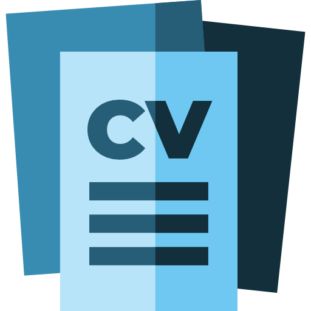
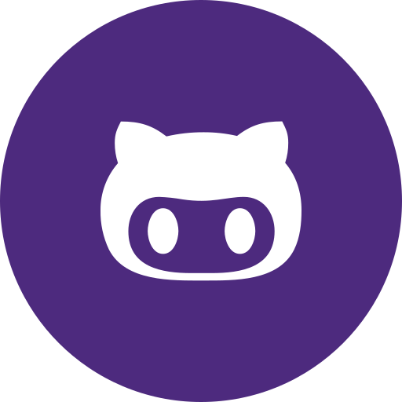

Sobre Mim
Olá, tenho 22 anos e sou acadêmico do 6° período de Medicina Veterinária na Universidade Federal de Viçosa. Busco experiências práticas nas diferentes áreas da Medicina Veterinária, mas é relevante citar meu interesse profissional na área de Diagnóstico por Imagem e Videocirurgia de Cães e Gatos.
Formação Acadêmica
-
Graduação em Medicina Veterinária na Universidade Federal de Viçosa - 2024 à Atualmente.
-
Ensino Médio e Técnico em Automação Industrial - 2019 à 2021.
Experiências e Estágios
-
Diretor de Marketing na Empresa Júnior Veterinarius - Universidade Federal de Viçosa - 01/2026 à Atualmente.
-
Membro da diretoria de Marketing na Empresa Júnior Veterinarius - Universidade Federal de Viçosa - 06/2025 à 12/2025.
-
Membro da diretoria de Marketing na Liga Acadêmica de Patologia Veterinária - Universidade Federal de Viçosa - 12/2024 à Atualmente.
-
Estágio na Clínica e Cirurgia de Grandes Animais - Hospital Veterinário da Universidade Federal de Viçosa - 10/2024 à 01/2025.
-
Estágio com Gado de Leite na Unidade de Ensino e Pesquisa de Gado de Leite da Universidade Federal de Viçosa - 03/2024 à 06/2024.
Contatos
Projetos
-
Iniciação Científica na área de Patologia Veterinária e Tecnologia - Universidade Federal de Viçosa - 03/2026 à Atualmente.
-
Empresa Júnior Veterinarius - Universidade Federal de Viçosa - 06/2025 à Atualmente.
-
Liga Acadêmica de Patologia Veterinária - Universidade Federal de Viçosa - 12/2024 à Atualmente.
-
Grupo de Estudos em Medicina Felina - Universidade Federal de Viçosa - 01/2025 à 06/2025.
Certificações
-
Endoscopia e Videocirurgia Veterinária - Universidade Federal de Viçosa - 2025.
-
Campanha de Vacinação Antirrábica - Universidade Federal de Viçosa - 2024.
-
Mini-curso Exames ultrassonográficos na emergência e internação de pequenos animais - Universidade Federal de Viçosa - 2025.
-
Mini-curso Atualização no tratamento das afecções de joelho em cães - Universidade Federal de Viçosa - 2025.
-
Entre latidos e emergência: a preparação salva - Clínica+/VetMais Consultoria Júnior/Universidade Federal de Juiz de Fora - 2026.
Idiomas
Inglês - Fluente
Espanhol - Intermediário
Francês - Básico
Rendryki.silva@ufv.br
31 998465458
Rendryki-mMelo

Currículo Lattes

Rendryki